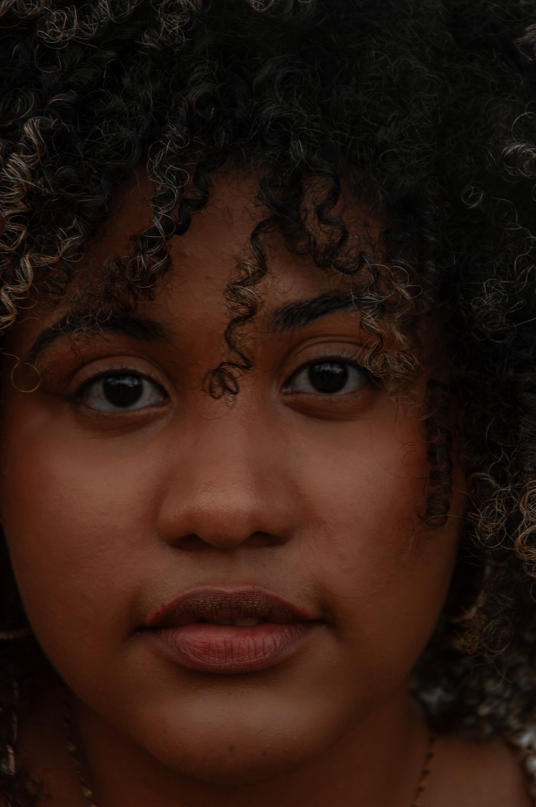

Avevo paura di tagliare i ricci dopo anni di capelli lunghi. Ottavia mi ha spiegato cosa avrebbe fatto prima di prendere le forbici e mi ha insegnato a gestirli a casa. Sono passati due mesi e la forma tiene ancora, anche senza piastra.
Giulia M.